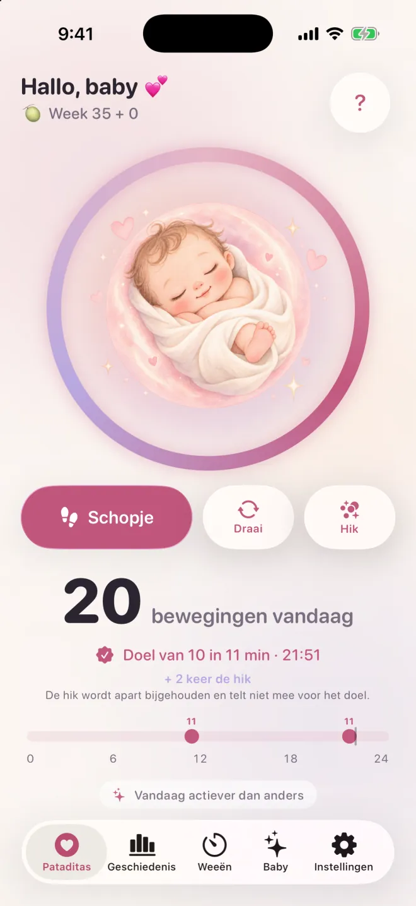

Tik om vast te leggen
Eén tik telkens als je baby beweegt. Niets om te starten, niets om te stoppen.
Tik gewoon telkens als je baby beweegt. Pataditas groepeert de bewegingen voor je en laat je zachtjes weten wanneer je er 10 in 2 uur hebt. Geen timers, geen sessies, geen account. Leg vast vanaf je iPhone of je Apple Watch.
Download in de App StoreHoeveel schopjes zijn normaal, en wanneer bel je? →
iPhone en Apple Watch · iOS 26 en watchOS 26 of nieuwer · 11 talen
De meeste schopjestellers vragen je op “start” te drukken, op de klok te kijken en op “stop” te drukken. Maar baby’s bewegen niet volgens een schema, en je hoeft je telefoon niet vast te houden als een stopwatch.
In Pataditas tik je gewoon als je een schopje of een draai voelt. De app groepeert je tikken zelf tot een telling en merkt wanneer je 10 bewegingen binnen 2 uur bereikt – en viert dat dan zachtjes met je mee.
Minder knoppen, minder druk, meer tijd om te genieten van die kleine voetjes.
Tik op Leg een beweging vast wanneer je een schopje of draai wilt vastleggen. Er is geen sessie om te starten of af te ronden. De hik kun je apart vastleggen.

Zachte hulpmiddelen voor de tweede helft van je zwangerschap, ontworpen om aan te voelen als een diepe ademhaling.
Eén tik telkens als je baby beweegt. Niets om te starten, niets om te stoppen.
Kies wat je voelde. De hik wordt bewaard in je geschiedenis, maar telt niet mee voor de 10.
Pataditas herkent 10 bewegingen binnen 2 uur en viert dat met een zachte animatie.
Zie je hele dag in één oogopslag, met een geschiedenis van alle dagen daarvoor.
Vergelijk de bewegingen die je vandaag hebt vastgelegd met je eerdere dagen. Ontbrekende registraties kunnen de vergelijking beïnvloeden; het is geen medische beoordeling.
Meest actieve moment van de dag, trends en weekdagen. Onderdeel van Pataditas Plus.
Neem een overzichtelijke samenvatting mee naar je volgende afspraak. Onderdeel van Pataditas Plus.
Tijd je weeën en krijg een melding als je het 5-1-1-patroon bereikt.
Volg je zwangerschapsweek en zie hoe groot je baby is.
Widgets op je beginscherm en toegangsscherm, het bedieningspaneel, Siri en de actieknop.
Leg bewegingen vast vanaf je pols, met complicaties op je wijzerplaat voor snelle toegang.
Een zacht duwtje op het moment dat jij kiest, om even rustig bij je baby stil te staan.
Jongen, meisje of verrassing: gepersonaliseerde kunst in zachte aquarel.
Zie na zeven dagen aan registraties hoe de bewegingen van vandaag zich verhouden tot je eerdere registraties. Ontbrekende registraties kunnen de vergelijking beïnvloeden; het is geen medische beoordeling.
Benieuwd hoeveel bewegingen normaal zijn? Lees hoe de NHS en Count the Kicks het tellen benaderen →
Pataditas bevat een bijbehorende Apple Watch-app (watchOS 26 of nieuwer). Tik op je horloge telkens als je een beweging voelt, en voeg Pataditas toe aan je wijzerplaat of slimme stapel voor snelle toegang. Registraties synchroniseren met de iPhone-app via je privé-iCloud.
De Watch-app werkt samen met de iPhone-app, die je downloadt in de App Store.
Kies jongen, meisje of verrassing en de hele app wordt er passend bij geschilderd.
Jouw zwangerschap is van jou.
Open de app en begin. We vragen nooit om je e-mailadres, naam of telefoonnummer.
Geen reclame en geen tracking-SDK’s. Anonieme gebruiksstatistieken staan standaard uit en doe je alleen mee als je dat zelf kiest.
Alles wordt bewaard op je iPhone en in je eigen privé-iCloud (CloudKit). De ontwikkelaar kan het niet zien.
Betalingen worden volledig door Apple afgehandeld. We zien nooit je betaalgegevens.
Leg bewegingen vast, bekijk je tijdlijn en geniet van de viering bij 10 in 2 uur, helemaal gratis. Upgrade alleen als je meer inzicht wilt.
Altijd gratis
Eenmalige betaling · Aanbevolen
7 dagen gratis · altijd opzegbaar
Prijzen voor Nederland in euro; de App Store toont de prijs in jouw land. De Zwangerschapspas is een eenmalige betaling zonder verlenging. Plus maandelijks wordt automatisch verlengd, tenzij je minstens 24 uur voor het einde van de periode opzegt. Zeg op elk moment op in de Instellingen van je iPhone.
Korte antwoorden over wat de NHS en Count the Kicks zeggen, en over Pataditas. Algemene informatie, geen medisch advies.
Count the Kicks stelt voor om een moment van de dag te kiezen waarop je baby meestal actief is, met je voeten omhoog te zitten of op je zij te liggen en elke beweging te noteren tot je er 10 hebt. Met Pataditas tik je gewoon telkens als je een schopje, draai of golfje voelt; je hoeft niets te starten of te stoppen, en de app houdt de telling en de tijd voor je bij. De NHS zegt dat je niet hoeft te tellen, dus vraag je verloskundige of arts welke aanpak zij aanraden.
Er is geen enkel normaal aantal. De NHS zegt dat er geen vast aantal bewegingen is dat je per dag zou moeten voelen; waar het om gaat, is het gewone patroon van je baby leren kennen. Count the Kicks stelt in plaats daarvan voor om vanaf week 28 te meten hoe lang het duurt voor je 10 bewegingen voelt, elke dag op ongeveer hetzelfde moment. Wat je ook doet: neem direct contact op met je verloskundige, arts of afdeling verloskunde als het patroon verandert.
De meeste mensen voelen de eerste bewegingen tussen ongeveer 16 en 24 weken (NHS); bij een eerste zwangerschap kan dat na 20 weken zijn. Count the Kicks stelt voor om vanaf week 28 dagelijks te tellen, of vanaf week 26 als je zwangerschap een hoger risico heeft of je meer dan één baby verwacht, terwijl de NHS zegt dat tellen niet verplicht is. Als je met 24 weken nog geen beweging hebt gevoeld, vertel dat dan aan je verloskundige. Vraag je verloskundige of arts wat zij voor jou aanraden.
De richtlijnen over tellen verschillen. Count the Kicks (VS) stelt voor om te meten hoe lang het duurt voor je 10 bewegingen voelt, vanaf week 28 (week 26 bij een hoger risico of als je meer dan één baby verwacht). De NHS (VK) zegt dat er geen vast aantal bewegingen is en dat je schopjes niet hoeft te tellen, maar dat je wel het gewone patroon van je baby moet leren kennen. Over het belangrijkste punt zijn ze het eens: als je baby minder beweegt dan normaal, stopt met bewegen of als het patroon verandert, neem dan direct contact op met je verloskundige, arts of afdeling verloskunde. De NHS voegt toe dat je zelfs midden in de nacht moet bellen en niet moet wachten tot de volgende dag. Pataditas legt alleen vast wat jij voelt; vraag je zorgverleners welke aanpak zij aanraden.
Nee. Count the Kicks telt de hik niet mee, omdat die als onwillekeurig wordt beschreven. In Pataditas kun je de hik als apart type vastleggen: die wordt bewaard in je geschiedenis, maar telt niet mee voor de 10 bewegingen. Weet je niet zeker of je de hik of een beweging voelde, vraag het dan aan je verloskundige of arts.
Pataditas groepeert 10 vastgelegde schopjes of draaien binnen twee uur. Dit is de eigen groepering van de app: het is geen gezondheidsbeoordeling en ook geen algemeen dagdoel. Volg het advies van je zorgverleners.
Neem direct contact op met je verloskundige, arts of afdeling verloskunde als de bewegingen afnemen, stoppen of veranderen. Wacht niet tot je een teldoel haalt en ook niet tot morgen. De NHS zegt dat je meteen moet bellen, zelfs midden in de nacht, en dat je je niet moet verlaten op een apparaat om thuis naar de hartslag te luisteren. NHS.
Na zeven dagen aan registraties laat Pataditas zien hoe de bewegingen die je vandaag hebt vastgelegd zich verhouden tot je eerdere dagen. Ontbrekende registraties kunnen de vergelijking beïnvloeden. De app kan niet alle bewegingen meten of zeggen of het goed gaat met je baby, en het is geen medische beoordeling.
Ja. Er is geen account, geen reclame en geen tracking, en anonieme gebruiksstatistieken zijn optioneel en staan uit tenzij je ze zelf aanzet. Je gegevens blijven op je iPhone en in je eigen privé-iCloud (CloudKit). De ontwikkelaar kan ze niet zien. Lees het volledige privacybeleid.
Ja, je kunt bewegingen vastleggen zonder verbinding. Als je bent ingelogd bij iCloud, synchroniseren je gegevens privé tussen je apparaten via je eigen iCloud-account, en synchroniseren je instellingen (zoals je naam en uitgerekende datum) via de iCloud-opslag voor sleutel-waardeparen. Geen van beide is voor ons zichtbaar.
Tellen is voor altijd gratis. Pataditas Plus voegt patroonanalyse met grafieken en een PDF-rapport voor je arts toe. Kies de Zwangerschapspas, een eenmalige betaling van € 8,99 die je hele zwangerschap dekt, geen verlenging kent en met je gezin gedeeld kan worden, of Plus maandelijks voor € 3,99 per maand met 7 dagen gratis proefperiode. Je kunt het abonnement op elk moment opzeggen in de Instellingen van je iPhone.
Ja. Pataditas heeft een bijbehorende Apple Watch-app (watchOS 26 of nieuwer): tik op je horloge telkens als je een beweging voelt, en voeg Pataditas toe aan je wijzerplaat of slimme stapel. Registraties synchroniseren met de iPhone-app via je privé-iCloud. De app werkt samen met de iPhone-app, die je downloadt in de App Store.
Pataditas werkt op iPhone met iOS 26 of nieuwer en op Apple Watch met watchOS 26 of nieuwer. De app is beschikbaar in 11 talen: Engels, Spaans, Braziliaans Portugees, Duits, Frans, Italiaans, Japans, Koreaans, vereenvoudigd Chinees, Nederlands en Albanees.
Een rustige schopjesteller. Tik gewoon als je baby beweegt.
Download in de App StoreProductinformatie van Kaelux · Bijgewerkt op 21 oktober 2026. Medische uitspraken op deze pagina komen uit de onderstaande bronnen (in het Engels) en zijn voor het laatst gecontroleerd op 21 oktober 2026. Dit is algemene informatie, geen medisch advies, en het is niet beoordeeld door een arts.